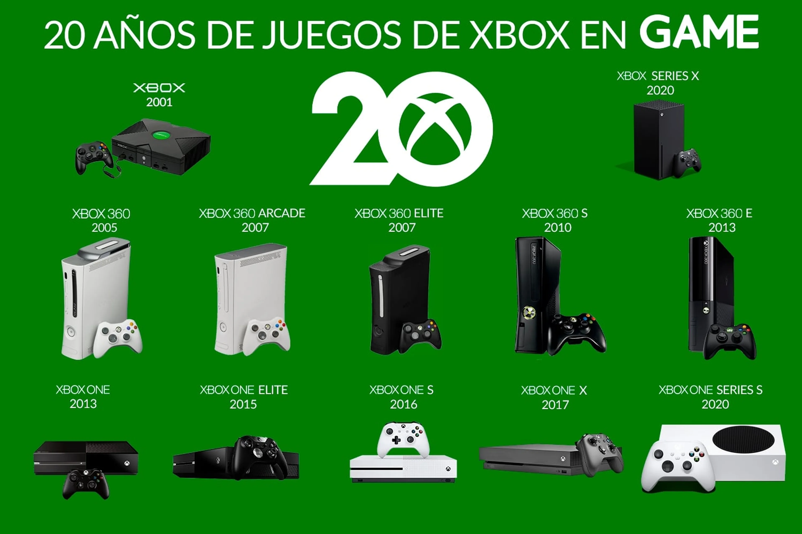

Orígenes de Xbox
Microsoft lanzó la Xbox en 2001, destacándose por su potencia y por introducir Xbox Live, el juego online en consolas.
Series más populares
Halo, Gears of War y Forza Motorsport son pilares fundamentales de la marca Xbox.
Inicio de Xbox
Microsoft ingresó al mercado en 2001 con Xbox para competir con Sony y Nintendo. Apostaron a juegos con alto poder gráfico y online.
Series y evolución
- Xbox: Primera consola con disco duro interno. Introdujo Halo.
- Xbox 360: Popularizó el juego online con Xbox Live.
- Xbox One / Series X|S: Integración con servicios como Game Pass y compatibilidad con generaciones anteriores.
Visión gamer
Xbox prioriza el servicio, el juego en la nube y el acceso a una gran biblioteca con su modelo de suscripción.
